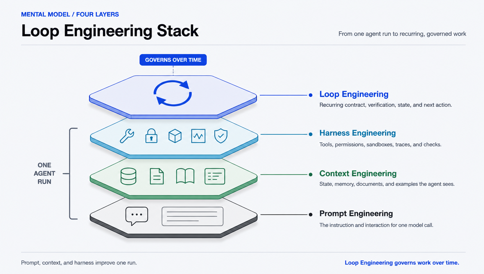

The field guide for recurring AI-agent systems
Awesome Loop Engineering
Design loops, not just prompts.
Build the recurring system around the agent: discover work, delegate it, verify the result, persist state, and decide what happens next.
Verify: gate completion with tests, evals, traces, or review.
Loop Engineering is the practice of designing recurring systems that discover work, delegate it to agents, verify results, persist state, decide next actions, and run again on a cadence, event, or until a verifiable goal is reached.Loop Engineering designs recurring agent systems that discover work, delegate it, verify results, persist state, and decide what happens next.

01 / The loop contract
Every reliable loop names the same parts.
The contract turns a recurring prompt habit into a reviewable operating system. Use the JSON schema and 15 validated examples to make each decision explicit.

01 / Set up
02 / Run
03 / Govern + close
Verifiable by design
Tests, typechecks, evals, traces, or reviewers decide done. The acting agent never approves itself.
State outside the model
Progress files, issues, checkpoints, and traces survive context resets and the next run.
Budgeted and bounded
Retries, runtime, and concurrency are capped, with a clear path to human judgment.
02 / The lifecycle
Evidence moves the loop forward.
A deterministic gate checks the work. The result and its receipts persist outside the model. The next action is retry, escalate, or exit.

- 01IntakeCapture bounded work.
- 02DelegateRoute it to an agent.
- 03ActWork in isolation.
- 04VerifyGate with evidence.
- 05PersistSave state and receipts.
- 06DecideChoose the next action.
03 / Pattern library
Start from the problem you have.
Each pattern includes a trigger, verification gate, durable state, budget, and escalation path. Compare all 15 in the pattern matrix.
No pattern matches that keyword. Browse the full matrix.
04 / Where loops run
Pick the runtime deliberately.
The same contract can run in a session, on a schedule, in CI, or through a durable worker. The runtime selection guide compares persistence, file access, isolation, and permissions.

Claude Code /loop
Session-scoped recurring work while you are nearby.
Desktop scheduled task
Local recurring runs with file access and missed-run guardrails.
Codex automation
Unattended background work in an isolated worktree.
GitHub agentic workflow
Scheduled or event-triggered work in GitHub Actions.
Shell / cron
A minimal wrapper that delegates to an agent CLI and records receipts.
Runnable reference
A dependency-light test-repair loop you can run today.
05 / Maturity model
Climb one level at a time.
A reliable Level 3 loop with durable state and deterministic checks is more useful than a Level 5 loop with vague goals.

06 / Curated resources
Find the evidence for your next decision.
Search 509 audited works by goal, lifecycle stage, artifact type, and evidence class. Each row combines the curated assessment with verified authorship, year, venue or source platform, and identifiers when the primary source exposes them.
Loading resource index...
Loading audited resources...
No resources match the current filters.
07 / Contribute
Bring a source or a real loop.
Add a vetted source with a specific annotation, or document a loop you actually run. Both paths have a checklist.
08 / FAQ
Loop Engineering, answered.
Short answers to the questions people ask first.
What is loop engineering?
Loop Engineering is the practice of designing recurring AI agent and coding-agent systems that discover work, delegate it, verify the result, persist state outside the model, decide what happens next, and run again.
How is it different from prompt, context, and harness engineering?
Prompt, context, and harness engineering improve one agent run. Loop Engineering governs how agent work repeats, verifies, persists state, and escalates over time.
When should you use an agent loop?
Use a loop when work recurs and a deterministic check can decide success. If a task is one-off, or done depends only on human judgment, a single agent run is usually enough.
What belongs in a loop contract?
Objective, trigger, intake, workspace, context, delegation, a verification gate, durable state, budget, escalation, and an exit condition.
Which runtimes can run agent loops?
The same loop can run as a Claude Code loop or scheduled task, a Codex automation, a GitHub agentic workflow, a shell or cron wrapper, or a durable-execution runtime.